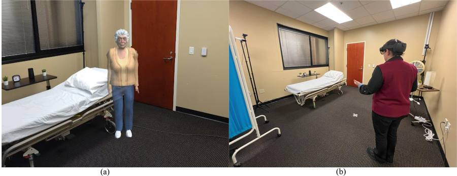
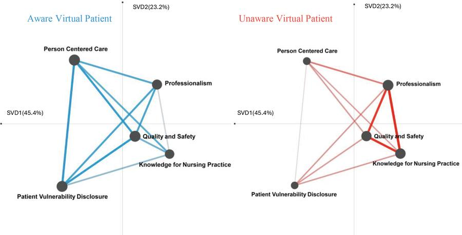
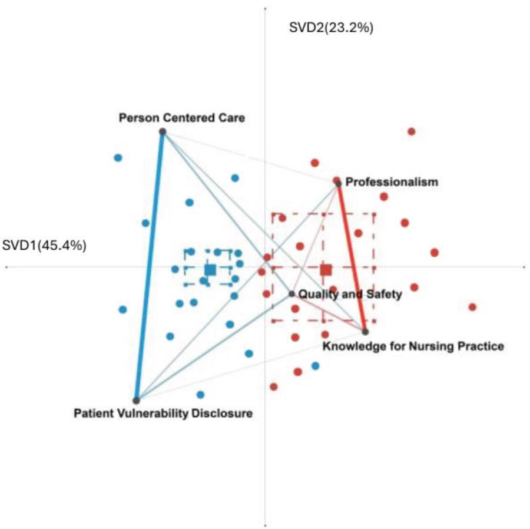
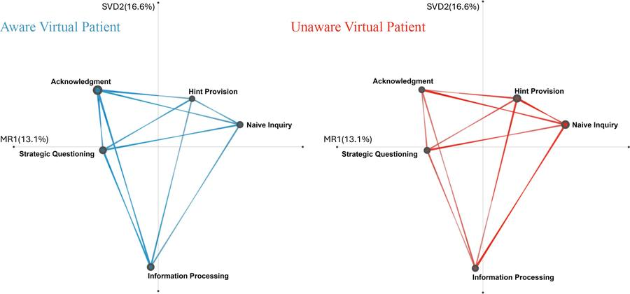
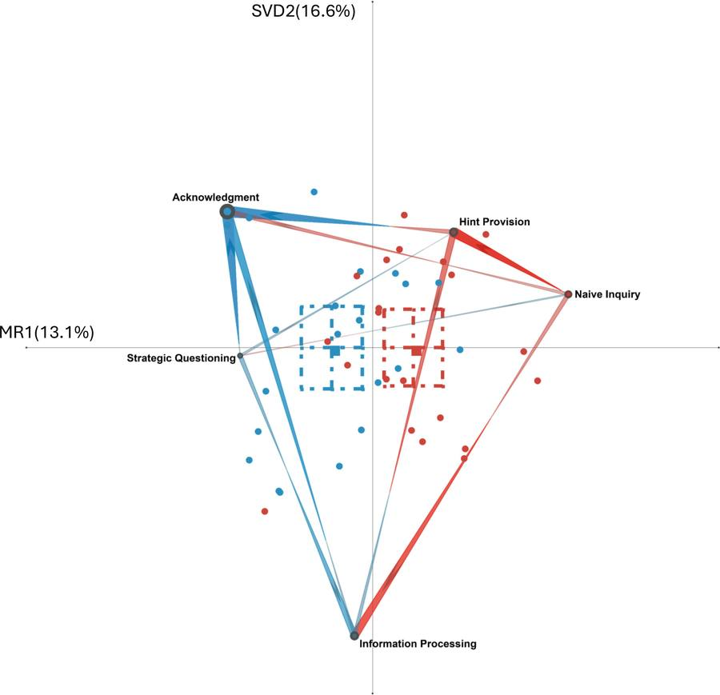
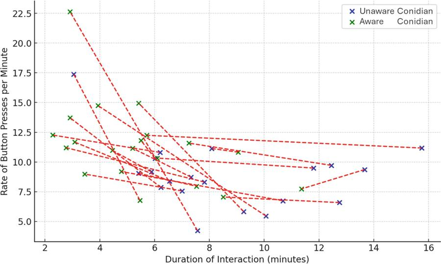

Publications · ICQE 2025 · Springer
A Quantitative Ethnographic Analysis of Caregiver Competencies and Engagement in Augmented Reality Geriatric Simulation
International Conference on Quantitative Ethnography (ICQE) 2025, CCIS vol. 2677, pp. 321–335. Springer, 2026.
Twenty caregivers met the same virtual patient twice: once oblivious, once aware of them and of the room. Three analyses of the transcripts agree: when she noticed them, their care became more person-centred, their reasoning more strategic, and their engagement higher.
Part of the project Embodied Virtual Human Simulation for Caregiver Training
At a glance
- Participants20Within-subjects, both conditions
- Transcript lines coded3,710Auto-transcribed, nCoder-classified
- ENA effect size2.12 Cohen’s dt(12.46) = 4.74, p < 0.01
- ONA effect size1.24 Cohen’s dt(39.93) = 4.03, p < .001
Who took part
A wider range of ages and experience than the earlier studies.
- 28.1 yrsMean age (SD 15.9, range 18–68)
- 4.5 yrsMean elderly-care experience (SD 8.4, range 0–30)
- 18 / 2Female / male
- 18 / 2Bachelor’s students / university faculty
- 10 of 20Had used VR before
- HoloLens 2Unity 2019.4.34f1, Maya-built patient
Three lenses on the same recordings
Each answers a different question about the interaction.
ENA — what co-occurs
Epistemic Network Analysis models which nursing competencies appear together across the whole interaction.
ONA — what follows what
Ordered Network Analysis adds direction, applied to a 20-question guessing game the participants played with the patient.
CORDTRA — when
Chronologically-ordered representation of tool activity: the rate of interaction triggers per minute, over time.
The competency codes
- Code
Knowledge for Nursing Practice
Integration and application of comprehensive nursing knowledge with interdisciplinary insight.
- Code
Person-Centered Care
Individualised, evidence-based care that is respectful, compassionate and informed by the person’s life experience.
- Code
Quality and Safety
Applying safety and improvement science to raise care quality and reduce harm.
- Code
Professionalism
Ethical comportment, social responsibility and continuous professional growth.
- Code
Patient Vulnerability Disclosure
Moments when the virtual patient shows feelings that call for more compassionate care.
Four codes come from The Essentials: Core Competencies for Professional Nursing Education; the fifth captures the patient’s own bids for compassion. Coding agreement between the automated classifier and two human raters: κ = 0.76 and 0.83.
What changed when she noticed them
The same twenty people, two conditions, three analyses.
Aware virtual patient
She recalls the person and reacts to the room
- Denser connections around Person-Centered Care and Patient Vulnerability Disclosure
- Empathetic reassurance folded into clinical reasoning, a strong link through Quality and Safety
- In the game: Strategic Questioning → Acknowledgment and → Information Processing
- More interactions initiated per minute
Unaware virtual patient
She responds, but notices nothing
- Strongest links between Knowledge for Nursing Practice and Professionalism
- A more traditional, protocol-driven approach to care
- In the game: Naive Inquiry → Hint Provision — trial and error
- Confirming replies were comparatively rare
ENA scores — aware vs unaware
Mean position on the first dimension (SVD1, 45.4% of variance) with standard deviation. The axis runs from empathetic care standards on the left to structured professional skills on the right. t(12.46) = 4.74, p < 0.01, Cohen’s d = 2.12.
Data table
| Condition | Mean (SVD1) | SD | N |
|---|---|---|---|
| Aware | −0.18 | 0.10 | 20 |
| Unaware | 0.18 | 0.22 | 20 |
ONA scores during the 20-question game
Mean position on the first dimension (MR1, 13.1% of variance) with standard deviation. t(39.93) = 4.03, p < .001, Cohen’s d = 1.24.
Data table
| Condition | Mean (MR1) | SD | N |
|---|---|---|---|
| Aware | −0.14 | 0.23 | 20 |
| Unaware | 0.14 | 0.22 | 20 |
A moment from the transcripts
The paper closes its interpretive loop by tying the network structure back to what people actually said.
“My family forgot about me. … I’m sure they didn’t forget about you. They should be here later hopefully. Do you have any children?”
Figures from the paper






Why it matters
Takeaway
The earlier interview study found empathy missing from formal caregiver training. This one shows that a virtual patient who expresses awareness pulls caregivers towards exactly that missing behaviour.
Combining ENA, ONA and CORDTRA gives three complementary readings — what competencies co-occur, in what order reasoning unfolds, and how engagement moves over time — from one set of recordings.
Stated limitations: a predominantly female participant pool, reflecting the profession, and an analysis confined to discourse. Emotional state and gaze data are the planned additions.